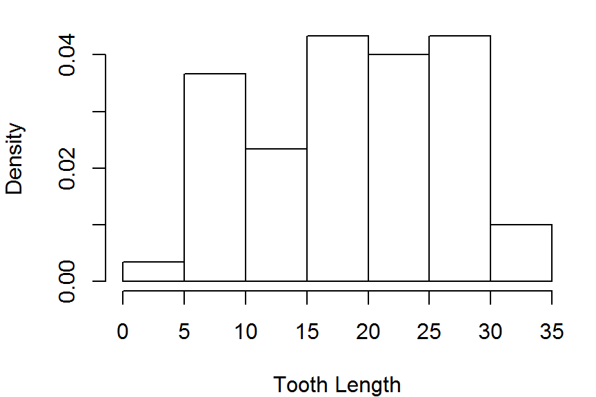
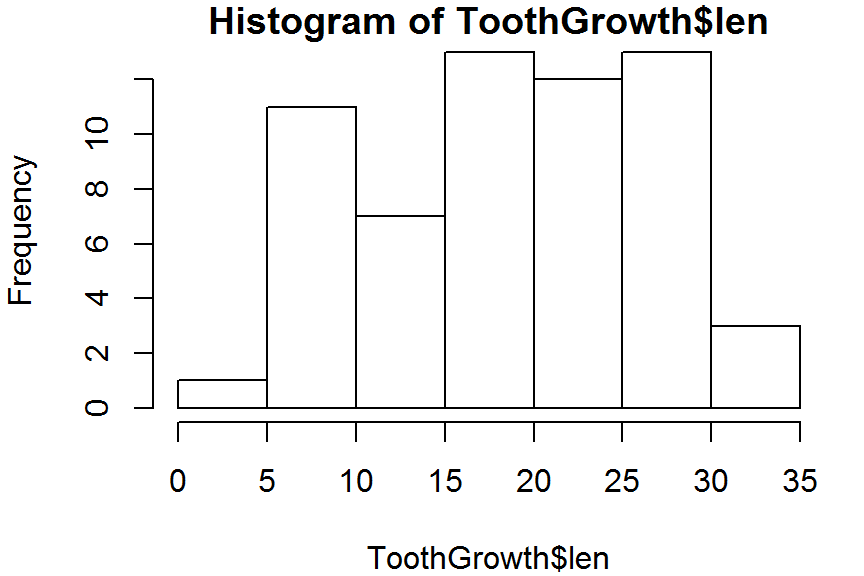
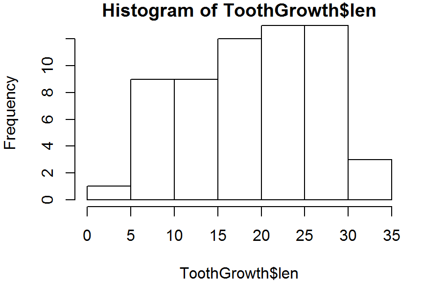
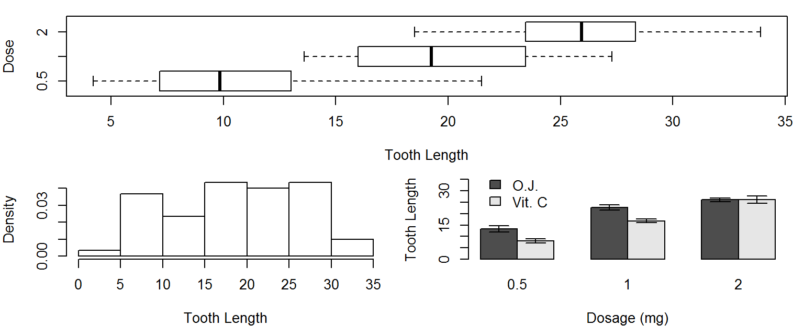
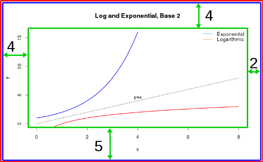

- Today we're going to move away from scatter plots and lines graphs, and use the
ToothGrowdata set to look at:- Histograms
- Boxplots
- Barplots
- Along the way, we'll learn more graphical parameters that control the appearance of our figures
- Focus on settings that change the global layout of the plots, rather than appearance of the data itself
2018-05-04
Different Data, Different Plots
ToothGrow
- The
ToothGrowdata set measures the effects of Vitamin C on the length of Guinea Pig teeth. - 2 Factors:
- Dose Level: .5, 1, or 2 mg.
- Delivery Method: O.J. or vitamin supplements
head(ToothGrowth)
## len supp dose ## 1 4.2 VC 0.5 ## 2 11.5 VC 0.5 ## 3 7.3 VC 0.5 ## 4 5.8 VC 0.5 ## 5 6.4 VC 0.5 ## 6 10.0 VC 0.5
Histograms
- Histograms summarize a single continuous variable by showing the relative likelihoods of observing specific values. To give a representative summary, be sure to consider:
- The number of breaks on the x-axis (i.e., how wide are the bins)
- Use of frequency (i.e., total counts) or proportions on the y axis
hist(ToothGrowth$len,freq = TRUE,
main = NULL, xlab="Tooth Length")
hist(ToothGrowth$len,freq = FALSE,
main = NULL, xlab="Tooth Length")

Histograms
- You can change whether values that fall exactly on a break value are sorted into the left or the right hand bin.
- Very important for discrete variables with only a few possible responses (e.g. a 7-point likert scale).
hist(ToothGrowth$len, right = TRUE) # right-inclusive

hist(ToothGrowth$len, right = FALSE) # left-inclusive

Histograms
In the previous example, the bins were too wide and made the histogram appear rectangular. We can change this with the breaks argument:
hist(ToothGrowth$len, breaks = 20, main = NULL, xlab = "Tooth Length")
We'll compare how well different breaks describe the data by plotting several histograms in the same figure. We can do this by changing the mfrow (multiple figures by row) graphics setting.
The mfrow value is set by using the par() function, and is used to divide the figure window up into a grid of different regions, allowing a different plot to be drawn in each region.
¡Danger!
When using par, remember that the changes you make affect all subsequent plots, which is not usually what you want.
One solution is to make a copy of the default par() settings before you modify them, then use that copy to reset the defaults after your plotting.
par_defaults <- par(no.readonly=TRUE) # copy the current settings ## Do some plotting stuff par(par_defaults) # Reset the defaults
If you happen to forget this, another trick is to restart your R session (Ctrl + Shift + f10) or "Restart R" under the "Session" menu.
par
With the warnings finished, lets change the plot window layout.
mfrowmust be a vector of length 2.- The first element gives the desired number of rows in the grid layout
- The second element gives the number of columns
With par(), you modify the settings using keyname/value pairs. So, the syntax for setting the layout style with mfrow is:
par(mfrow = c(2,2)) # sets a 2x2 grid of plots
Comparing Breaks
Now that we've set par, lets looks at 4 different values for the `breaks' arguments (the right two columns seem the best)
Common Axis
When putting multiple plots on one figure, its often useful to have them share a common axis. You can suppress the plotting of the axis by setting the xaxt or yaxt to 'n', and then manually drawing an axis on the last figure you plot
par(mfrow=c(2,1)) hist(ToothGrowth$len, breaks=20, main=NULL, xlab=NULL, xaxt="n") hist(ToothGrowth$len, breaks=60, main=NULL, xlab="Tooth Length", xaxt="n") axis(side=1,col="blue", lwd=2) # side 1 is bottom axis
Box Plots
Box plots are a good way to present the shape of an observed sample along with some summary statistics.
Unlike histograms, we can plot an arbitrary number of box plots on the same axis without invoking par()
OJ <- ToothGrowth$len[ToothGrowth$supp=="OJ"]
AA <- ToothGrowth$len[ToothGrowth$supp=="VC"]
boxplot(OJ, AA, names=c("Orange Juice","Ascorbic Acid"),
xlab="Supp. Type", ylab="Tooth Length")
Box Plots
If our data come from a data frame, we can use a formula instead of subsetting out every individual group.
Below, the formula len~dose means "Group the values in the len column by the values in the dose column." dose has 3 unique values, so we get 3 boxplots, 1 boxplot per dose.
boxplot(len~dose, data=ToothGrowth, xlab="Dose", ylab="Tooth Length")
Customizing Box Plots
Two useful boxplot customizations are:
- Make them horizontal (
horizontal = TRUE) - Make their width proportional to the sample size (
varwidth=TRUE)
boxplot(len~dose, data=ToothGrowth, horizontal = TRUE,
varwidth=TRUE, ylab="Dose", xlab = "Tooth Length")
Bar Plot
Bar plots are used to visualize single summary statistics, like the mean and median across groups. Here is the basic syntax for barplot for plotting a vector.
barplot(height = c(5,10,7.5), names.arg = c("Slow","Medium","Fast"),
main="Fictional Data", ylab="Avg. Score", xlab="Speed")

Bar Plot
Since bar plots only plot 1 value per group, we need to summarise the ToothGrowth data before plotting.
# Don't worry about this just do it =)
library(dplyr); library(reshape2)
TG <- ToothGrowth %>% group_by(supp,dose) %>%
summarise(y = mean(len)) %>% acast(supp~dose) %>%
`dimnames<-`(list("Supp"=c("O.J.","Vit. C"), "Dose"=c(.5,1,2)))
| 0.5 | 1 | 2 | |
|---|---|---|---|
| O.J. | 13.23 | 22.70 | 26.06 |
| Vit. C | 7.98 | 16.77 | 26.14 |
Reshaping from data.frame to matrix is necessary because barplot can only work with vectors or matrices.
Bar Plot
The default barplot settings for a matrix are not so hot.
barplot(TG,xlab="Dose", ylab="Tooth Length")
Side-by-side barplots are preferred to stacked barplots, and we need a legend, to have a functional plot.
Barplot: Good
Use beside=TRUE to put the bars next to one another.
barplot(TG, beside = TRUE, xlab="Dosage (mg)", ylab="Tooth Length")
Barplot: Better
Lets place the bars side by side, and increase the size of the main title (cex.main), the axis labels, (cex.lab) and the axis tick labels (cex.axis affects the y axis tick labels, cex.names affects x axis tick labels).
barplot(TG, beside = TRUE, xlab="Dosage (mg)", ylab="Tooth Length",
cex.main=1.75, cex.axis=1.35,
cex.names=1.35, cex.lab=1.25)

Barplot: Best
Finally, lets add a legend with the legend.text argument, and choose a location for it with the args.legend argument. Alternatively, you could use the legend function directly.
barplot(TG, beside = TRUE, xlab="Dosage (mg)", ylab="Tooth Length",
cex.main=1.75, cex.axis=1.35,
cex.names=1.35, cex.lab=1.25,
legend.text=TRUE, args.legend=list(x=3,y=25,bty="n"))
Legend Placement
In a barplot, its hard to know what x and y coordinates to use for your legend if the position keywords are not appropriate for your plot (e.g. the "topright" corner has data in it).
One trick is to use the locator() function.
- Call
locator()with no arguments, and your cursor should turn into cross-hairs. - Click those cross hairs on the plot window and hit
escape - In the console, you should see the x and y position of the point you clicked on.
- Yay!
Asepct Ratio
- We can force the length of the x and y axis to be equal on our plots
par(pty="s")makes the plot region square, no matter the window sizepar(pty="m")makes the plot region as large as margins allow
A square plot is very useful when the both axis have the same limits (e.g., when both x and y axis go from 0 to 1)
par(pty="m")
barplot(TG, beside = TRUE,
xlab="Dosage (mg)",
ylab="Tooth Length",
legend.text=TRUE,
args.legend=list(x=3,y=25,
bty="n"))
par(pty="s")
barplot(TG, beside = TRUE,
xlab="Dosage (mg)",
ylab="Tooth Length",
legend.text=TRUE,
args.legend=list(x=16,y=25,
bty="n"))
Barplots
One thing is missing from our barplots that was included in our other 2 types of figures: An estimate of variability!
We'll add errors bars equal to 1 Standard Error of the Mean (SEM) to our barplot, using the matrix made below
TGerr <- ToothGrowth %>% group_by(supp,dose) %>% summarise(sd = sd(len)/sqrt(n())) %>% acast(supp~dose,value.var="sd")
## Warning: package 'bindrcpp' was built under R version 3.4.4
| 0.5 | 1 | 2 | |
|---|---|---|---|
| OJ | 1.410284 | 1.2367520 | 0.8396031 |
| VC | 0.868562 | 0.7954104 | 1.5171757 |
Error Bars
The key to plotting error bars is capturing the return value of barplot, which tells you the x-axis coordinates the bars are centered on.
x <- barplot(TG, xlab="Dosage (mg)", ylab="Tooth Length",
legend.text=TRUE, beside=TRUE, ylim=c(0,35),
plot=FALSE, args.legend =list(x=3,y=30,bty="n"))
print(x)
## [,1] [,2] [,3] ## [1,] 1.5 4.5 7.5 ## [2,] 2.5 5.5 8.5
Then, you can use this matrix to tell the arrows function where to plot the error bars along the x axis.
Error Bars
arrows() needs the starting x and y coordinates of the error bars (arguments x0 and y0) and the ending x and y coordinates (arguments x1 and y1).
The angle argument should be 90 (i.e. a line cap), and the code should be 3 (meaning draw caps on top and bottom).
arrows(x0=x, y0=TG+TGerr, x1=x, y1=TG-TGerr, angle=90, code=3,
length=.1)
More layout control
Lets imagine we want to put our histogram, box plot and barplot on the same figure.
We could use mfrow or mfcol to do that, but we have an odd number of plots, and would end up with a blank spot in the grid of plot locations.
A better choice would be to use the layout function, which lets you divide the plot window into rows and columns for multiple plots, but also lets you specify how many rows and columns each plot takes up.
More layout control
- The primary argument to
layoutis amat, a numeric matrix - The dimensions (e.g. 2 by 2) determine the number of rows and column in the plot window
- The value in each cell of the matrix determine which rows and columns the next figure is drawn across
For example, passing the matrix \(\left[\begin{array}{cc}1 & 1 \\ 2 & 3\end{array}\right]\) to layout means:
- Create a 2x2 grid layout
- Draw the first plot made across both columns of the first row
- Draw the second and third plots in one column each of the second row
More layout control
Lets use this layout matrix to put our 3 plots in the same figure window.
layout(mat=matrix(c(1,1,2,3), nrow=2, byrow=TRUE))
boxplot(len~dose, data=ToothGrowth, horizontal = TRUE, varwidth=TRUE,
xlab="Tooth Length", ylab="Dose")
hist(ToothGrowth$len,freq = FALSE, main = NULL, xlab="Tooth Length")
x <- barplot(TG, xlab="Dosage (mg)", ylab="Tooth Length", legend.text=TRUE,
beside = TRUE,ylim=c(0,35), args.legend =list(x=3,y=40,bty="n"))
arrows(x0=x, y0=TG+TGerr, x1=x, y1=TG-TGerr, angle=90, code=3, length=.1)
par(mfrow=c(1,1)) # reset back to default layout

More layout control
You might notice that there is still some "dead space" in this layout (i.e. space where it is not useful) and a lack of space where we might want some to be.
To fix this, we often want to change the:
- inner margin size (the distance between the plot axis and the figure limits)
- the outer margin size (the padding between the figure limits and the window edges)
mar and oma
- The graphical parameter
marcontrols the inner margins, shown as the distance between the green and blue boxes below - The graphical parameter
omacontrols the outer margins, shown as the distance between the blue and red boxes below (default distance is 0)

mar and oma
You change these distances with the par function, passing in a 4-element vector. The 4 elements of the vector correspond to the distances along the bottom, left, top, and right sides, respectively.
par(mar = c(4,4,2,2)) # Shrink vertical margins of each plot par(oma = c(1,1,1,1)) # Add 1 line of padding around the window
Activity
Using the warpbreaks data set:
- Make a box plot for each combination of wool type (A and B) and tensions (Low, Medium, and High), all on the same axis.
- Make a bar plot for each combination of wool type and tensions with errors bars (summary code below), be sure to include a legend.
- Put these two figures in one plot window, with
layoutorpar(mfrow).
library(dplyr); library(reshape2)
WB <- warpbreaks %>%
group_by(wool,tension) %>%
summarise(y = mean(breaks),
se = sd(breaks)/sqrt(n()))
WB_means <- acast(WB, wool~tension,value.var="y")
WB_err <- acast(WB, wool~tension,value.var="se")